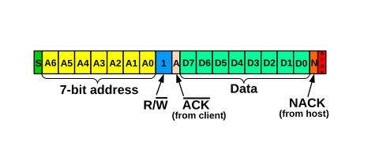
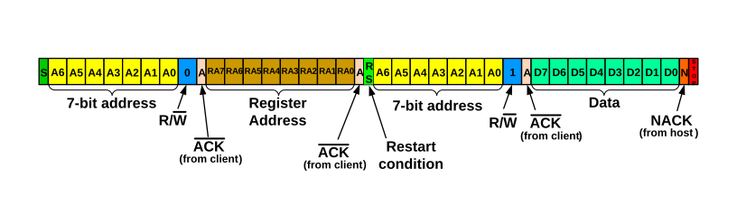
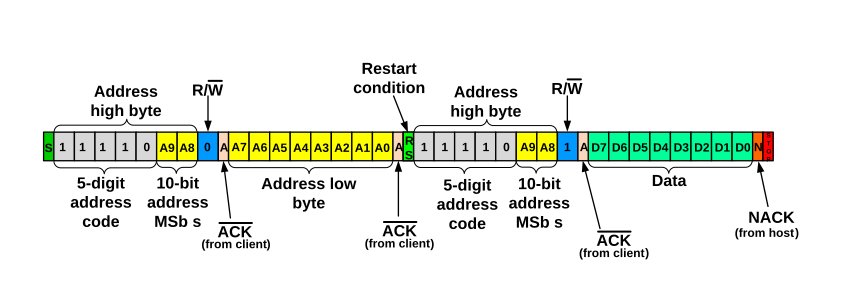
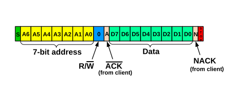
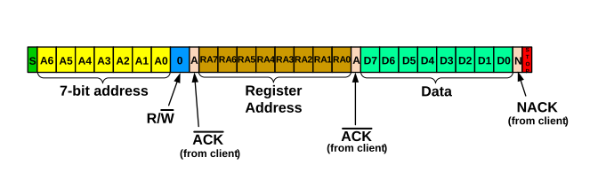
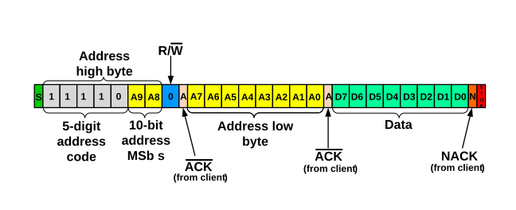

1), it examines the state of the
Address Buffer Disable (ABD) bit. The ABD bit determines whether the I2CxADB registers are used.When ABD is clear (ABD = 0), address buffers I2CxADB0 and
I2CxADB1
are active. In 7-bit Addressing mode, software loads I2CxADB1 with the 7-bit client
address and R/W bit setting and also loads I2CxTXB with
the first byte of data. In 10-bit Addressing mode, software loads I2CxADB1 with the
address high byte and I2CxADB0 with the address low byte and also loads I2CxTXB with the
first data byte. Software must issue a Start condition to initiate communication with
the client.
1), the address buffers are
inactive. In this case, communication begins as soon as software loads the client
address into I2CxTXB. Writes to the Start (S) bit are ignored.In 7-bit Addressing mode, the Least Significant bit (LSb) of the 7-bit address byte acts as the Read/not Write (R/W) information bit, while in 10-bit Addressing mode, the LSb of the address high byte is reserved as the R/W bit. When R/W is set, the host intends to read data from the client (see the figure below). When R/W is clear, the host intends to write data to the client (see the figure below). The host may also wish to read or write data to a specific location, such as writing to a specific EEPROM location. In this case, the host issues a Start condition, followed by the client’s address with the R/W bit clear. Once the client acknowledges the address, the first data byte following the 7-bit or 10-bit address is used as the client’s specific register location. If the host intends to read data from the specific location, it must issue a Restart condition, followed by the client address with the R/W bit set (see the figure below). If the addressed client device exists on the bus, it must respond with an Acknowledge (ACK) sequence.
Once a client has acknowledged its address, the host begins to receive data from the client or transmits data to the client. Data are always transmitted Most Significant bit (MSb) first. When the host wishes to halt further communication, it transmits either a Stop condition, signaling to the client that communication is to be terminated, or a Restart condition, informing the bus that the current host wishes to hold the bus to communicate with the same or other client devices.





